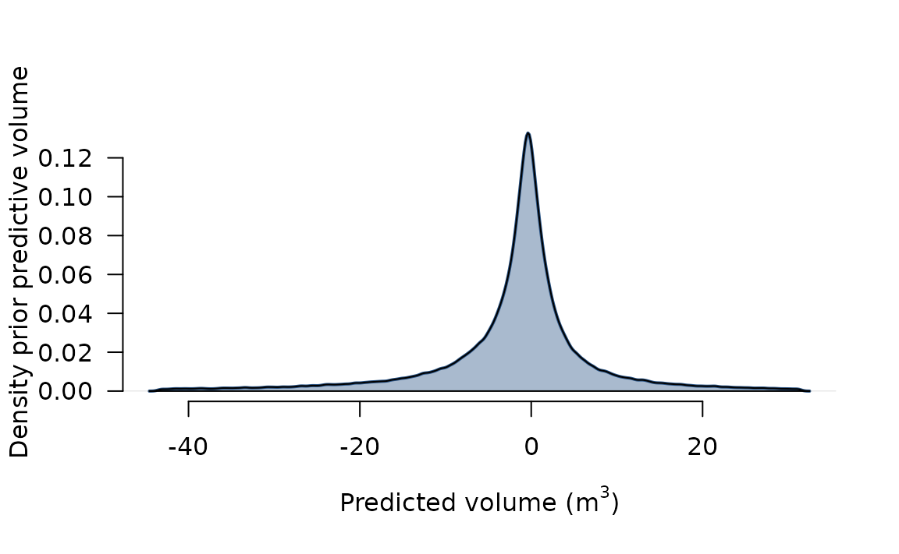

Code
Modele_mai2 = nlme(formTotNew ~ a + b*hdn + d*hsurd, data = Grdata.PV,
start = c(a = 0.4, 0, b = 1.5, 0, d = 0.0005, 0),
fixed = list(a + b + d ~ feuil.res), random = a + d ~ 1|nomessence2)The original model can be found in Deleuze et al. (2014). In their scripts, they used the following code:
Modele_mai2 = nlme(formTotNew ~ a + b*hdn + d*hsurd, data = Grdata.PV,
start = c(a = 0.4, 0, b = 1.5, 0, d = 0.0005, 0),
fixed = list(a + b + d ~ feuil.res), random = a + d ~ 1|nomessence2)The model Modele_mai2 computes the form factor \(\mathscr{F}\) for an individual of height \(h\) and circumference at breast height \(c\), of species \(j\) and functional group \(i\) (conifer or broadleaf) as: \[\begin{equation} \label{eq::deleuze}
\begin{aligned}
\mathscr{F}&\sim \mathbfscr{N}(\mu, \sigma) \\
\mu_{i, j} &= a_{i, j} + b_i \frac{\sqrt{c}}{h} + d_{i, j} \frac{h}{c} \\
a_{i, j} &\sim \mathbfscr{N}(\alpha_i, \sigma_{\alpha}) \\
d_{i, j} &\sim \mathbfscr{N}(\delta_i, \sigma_{\delta}),
\end{aligned}
\end{equation}\] where \(\alpha_i\) and \(\delta_i\) are the ‘group intercepts’ (common values within conifers and broadleaves). Therefore, it seems to be a GLMM, and I am not sure nlme is relevant here. In the next sections, I will try to reproduce their study with a Bayesian model, although I am not sure I succeeded to recreate their dataset completly. A previous analysis was done in the file 00_notes.qmd with simulated data in order to verify my Bayesian model.
I rewrite the equation \(\eqref{eq:deleuze}\) with new variable names and without the indices \(i\) and \(j\), in order to correspond to the bayesian model (written in Stan, see Section 3): \[\begin{equation} \label{eq::deleuze-modified} \begin{aligned} \mathscr{F}&\sim \mathbfscr{N}(\mu, \sigma) \\ \mu &= \beta_0 + b_1 \frac{\sqrt{c}}{h} + \beta_2 \frac{h}{c} \\ \beta_0 &\sim \mathbfscr{N}(b_0, \sigma_0) \\ \beta_2 &\sim \mathbfscr{N}(b_2, \sigma_2), \end{aligned} \end{equation}\]
First, I load the necessary packages:
#### Clear space and load packages
rm(list = ls())
graphics.off()
options(max.print = 500)
library(data.table)
library(MetBrewer)
library(cmdstanr)
register_knitr_engine(override = TRUE)
library(stringi)
library(nlme)
library(gt)
setHook(packageEvent("grDevices", "onLoad"),
function(...) grDevices::X11.options(type='cairo'))
options(device='x11')By default, Quarto uses the knitr’s built-in stan engine rstan. To override it so that all stan chunks are processed with CmdStanR, I need to specify:
register_knitr_engine(override = TRUE)Then, I define useful functions:
#### Tool functions
## Tools
source("./toolFunctions.R")
## Function to compute tree volume according to model
vol_fct = function(params_vec, predictor_mat, corrected_cyl_vol)
return((predictor_mat %*% params_vec) * corrected_cyl_vol)The data are stored on the remote server smb://del1509n015/ in the folder 2024_faircarbon/data_orig/. On Linux, it is first necessary to mount locally the folder, so that R can access the files:
JohnField-Admin (really nice Irish composer) by your admin name (typically, your IGN id followed by -Admin):su JohnField-AdminYour admin password will be asked
/mnt/local_share. You need to be super user to write in /mnt/:sudo mkdir /mnt/local_shareThis step should be done only once.
smb://del1509n015/2024_faircarbon/, where you replace your_name by your usual IGN id (NOT the admin one):sudo mount -t cifs -o username=your_name,domain=ign,uid=your_name //del1509n015/2024_faircarbon /mnt/local_share/Maybe two passwords will be asked, first your admin password to execute the sudo, and then your usual password. If you just did step 2, then the prompt will not ask again for your password.
ls -l /mnt/local_share/The content of the remote folder should appear. You can close your admin session by using ctrl + d or Cmd + d
Now that the raw data are accessible to , it is time to prepare them:
#### Prepare data
## Loading
os = Sys.info()[['sysname']]
mnt_point = "/mnt/local_share/"
if (os == "Linux" || os == "Darwin")
{
if (!dir.exists(mnt_point))
stop(paste0("The mounting point <", mnt_point, "> does not exist"))
} else if (os == "Windows") {
stop("TO DO!!! No idea how that works on Windows!")
} else {
stop(paste("Unknown Operating System:", os))
}
path_data = paste0(mnt_point, "/data_orig/")
if (!dir.exists(path_data))
stop(paste0("Folder <", path_data, "> does not exist! Are you sure you mounted the good remote folder?"))
if (list.files(path = path_data) != "EMERGE.RData")
stop("There should be only the file <EMERGE.RData> in the data_orig folder")
load(paste0(path_data, "EMERGE.RData"))
setDT(inra_arbres)
## Keep only column of interest and rename them
inra_arbres[, tot_vol := v_tronc_verif + v_fourche_verif + v_fourche2_verif + v_br_verif + v_menu_verif]
inra_arbres = unique(inra_arbres[, .(nom_fichier, essence, c130, h_tot, tot_vol, genre)])
inra_arbres = na.omit(inra_arbres)
setnames(inra_arbres, new = c("unique_id", "speciesName_sci", "circumference_cm", "height", "tot_vol", "genus"))
inra_arbres[, fct_type := "broadleaf"] # Functional type, either broadleaf or conifer
inra_arbres[genus %in% c("Abies", "Cedrus", "Larix", "Picea", "Pinus", "Pseudotsuga", "Thuya", "Tsuga"),
fct_type := "conifer"]
inra_arbres[, unique_id := as.character(unique_id)]
inra_arbres[, speciesName_sci := as.character(speciesName_sci)]
inra_arbres[, genus := as.character(genus)]
inra_arbres[, nb_indiv := .N, by = speciesName_sci]
# inra_arbres = inra_arbres[nb_indiv > 20]
## Compute (total) volume in m³, circumference in m, hardiness, and slenderness
inra_arbres[, volume_m3 := tot_vol/1e3]
inra_arbres[, circumference_m := circumference_cm/100]
inra_arbres[, hdn := sqrt(circumference_m)/height]
inra_arbres[, slenderness := height/circumference_m]
## In the original model, there are the variables formTot, and formTotNew. I need to rebuild them
inra_arbres[, formTot := 4*pi*volume_m3/(height*circumference_m^2)]
inra_arbres[, formTotNew := formTot * (1 - 1.3/height)^2]
inra_arbres[, feuil.res := as.factor(fct_type)]
## Indices
# Find start and end indices for each species
setkey(inra_arbres, fct_type, speciesName_sci, unique_id)
ind_species = inra_arbres[, .(start = .I[1], end = .I[.N]), by = .(speciesName_sci)]
ind_species[, n_indiv := end - start + 1, by = speciesName_sci]
if (ind_species[, sum(n_indiv)] != inra_arbres[, .N])
stop("The number of individuals in ind_species does not correspond to the number of individuals in inra_arbres!")
ind_species = merge.data.table(ind_species, unique(inra_arbres[, .(speciesName_sci, fct_type)]), by = "speciesName_sci")
ind_species[, colour := if(fct_type == "broadleaf") "#FFAF37" else "#007BA5", by = speciesName_sci]
setorder(ind_species, start)
n_sp = ind_species[, .N, by = fct_type]
setkey(n_sp, fct_type)
## Stan data
stanData = list(
N = inra_arbres[, .N],
S = ind_species[, .N],
n_sp_conif = n_sp["conifer", N],
n_sp_broad = n_sp["broadleaf", N],
ind_start_broad = ind_species[fct_type == "broadleaf", start],
ind_start_conif = ind_species[fct_type == "conifer", start],
ind_end_broad = ind_species[fct_type == "broadleaf", end],
ind_end_conif = ind_species[fct_type == "conifer", end],
height = inra_arbres[, height],
circumference_m = inra_arbres[, circumference_cm/100],
volume_m3 = inra_arbres[, volume_m3]
)The data are now ready! Here is the composition:
The correlation between the hardiness and the slenderness is -0.51, which is expected and I guess problematic…
After running a Bayesian model, it is important to do a ‘predict’ on new data to check that the model can generate sensible volume. For this, I use the volume-measured trees dataset from 2010, which I format in the following code snippet.
## Add species to the profiles
setDT(emerge_2010_profils)
setDT(emerge_2010_arbres)
emerge_2010_arbres = unique(emerge_2010_arbres[, .(tree, species, c130)])
emerge_2010_profils = emerge_2010_arbres[emerge_2010_profils, on = "tree"]
## Compute dbh top/bottom of each log
emerge_2010_profils[, dbh_bottom_m := circ_bas_cm/(100*pi)]
emerge_2010_profils[, dbh_top_m := circ_haut_cm/(100*pi)]
## Reorganising
emerge_2010_profils[, species := as.character(species)]
setorder(emerge_2010_profils, tree, niveau_bas_m)
emerge_2010_profils[, id := NULL]
emerge_2010_profils[, c130 := c130/100]
setnames(x = emerge_2010_profils, old = c("niveau_bas_m", "niveau_haut_m", "c130"), c("h_bottom", "h_top", "circumference_m"))
emerge_2010_profils = emerge_2010_profils[, .(tree, species, dbh_bottom_m, dbh_top_m, h_bottom, h_top, circumference_m)]
## Compute log and cumulated volumes
emerge_2010_profils[, height := max(h_top), by = tree]
emerge_2010_profils[, volume_m3 := pi/12*max(dbh_bottom_m)^2*height, by = tree]
emerge_2010_profils[, vol_log := pi/12*dbh_bottom_m^2*(height - h_bottom) - pi/12*dbh_top_m^2*(height - h_top)]
emerge_2010_profils[, cumulated_vol := cumsum(vol_log), by = tree]
emerge_2010_profils[, cumulated_percent_vol := cumulated_vol/volume_m3, by = tree]
## Keep only variables of interest
data_check = unique(emerge_2010_profils[, .(tree, species, volume_m3, height, circumference_m)])
## Change vernacular species names to scientific
species_dt = data.table(species = c("Frêne", "Chêne vert", "Tilia cordata", "Chêne sessile", "Eucalyptus",
"Robinier", "Pin Alep", "Chêne pubescent", "Aulne", "Bouleau"),
speciesName_sci = c("Fraxinus excelsior", "Quercus ilex", "Tilia cordata", "Quercus petraea", "Eucalyptus spp.",
"Robinia pseudoacacia", "Pinus halepensis", "Quercus pubescens", "Alnus glutinosa", "Betula pendula"),
fct_type = c(rep("broadleaf", 6), "conifer", rep("broadleaf", 3)))
data_check = merge.data.table(data_check, species_dt, by = "species")
data_check[, species := NULL]
data_check[speciesName_sci == "Quercus petraea", speciesName_sci := "Quercus robur_petraea"] # Because of inra_arbres
setkey(data_check, speciesName_sci)
data_check = data_check[speciesName_sci %in% species_nb[, speciesName_sci]]
data_check[, hdn := sqrt(circumference_m)/height]
data_check[, slenderness := height/circumference_m]
data_check[, corrected_cyl_vol := height*circumference_m^2/(4*pi*(1 - 1.3/height)^2)]
data_check[, feuil.res := as.factor(fct_type)]Here is the composition of the data for the posterior predictive checks:
CmdStanRI use the following model, which has been tested with simulated data in 00_notes.qmd:
data {
// Dimensions and indices
int N; // Number of individuals
int S; // Number of species
int<lower = 0, upper = S> n_sp_broad; // number of broadleaf species
int<lower = S - n_sp_broad, upper = S - n_sp_broad> n_sp_conif; // number of conifer species
array[n_sp_broad] int ind_start_broad; // Broadleaf species index start
array[n_sp_conif] int ind_start_conif; // Conifer species index start
array[n_sp_broad] int ind_end_broad; // Broadleaf species index end
array[n_sp_conif] int ind_end_conif; // Conifer species index end
// Predictors
vector<lower = 0> [N] height;
vector<lower = 0> [N] circumference_m;
// Response variable
vector [N] volume_m3;
}
transformed data {
vector [N] hdn = sqrt(circumference_m) ./ height;
vector [N] slenderness = height ./ circumference_m;
vector [N] corrected_cyl_vol = height .* circumference_m^2 ./ (4*pi()*(1 - 1.3/height)^2);
}
parameters {
// Fixed effects (population parameters) for broadleaf and conifer
vector[2] b0;
vector[2] b1;
vector[2] b2;
// Random effects (group parameters)
// vector[S] eta0;
// vector[S] eta2;
vector[S] beta0;
vector[S] beta2;
// Variances
real<lower = 0> sigma; // sd residuals
real<lower = 0> sigma_beta0; // sd random effect beta0
real<lower = 0> sigma_beta2; // sd random effect beta2
}
// transformed parameters {
// vector[S] beta0;
// vector[S] beta2;
// beta0[1:n_sp_broad] = b0[1] + eta0[1:n_sp_broad]*sigma_beta0;
// beta0[(n_sp_broad + 1):S] = b0[2] + eta0[(n_sp_broad + 1):S]*sigma_beta0;
// beta2[1:n_sp_broad] = b2[1] + eta2[1:n_sp_broad]*sigma_beta2;
// beta2[(n_sp_broad + 1):S] = b2[2] + eta2[(n_sp_broad + 1):S]*sigma_beta2;
// }
model {
// Priors
// --- Population parameters
target += normal_lpdf(b0 | 0, 1);
target += normal_lpdf(b1 | 2, 1);
target += normal_lpdf(b2 | 0, 0.2);
// --- Residual variance and population variance
target += inv_gamma_lpdf(sigma | 2, 1); // Uses shape and scale (which is the rate from gamma perspective)
target += inv_gamma_lpdf(sigma_beta0 | 3, 0.5);
target += inv_gamma_lpdf(sigma_beta2 | 3, 0.5);
// Hierarchy
target += normal_lpdf(beta0[1:n_sp_broad] | b0[1], sigma_beta0);
target += normal_lpdf(beta2[1:n_sp_broad] | b2[1], sigma_beta2);
target += normal_lpdf(beta0[(n_sp_broad + 1):S] | b0[2], sigma_beta0);
target += normal_lpdf(beta2[(n_sp_broad + 1):S] | b2[2], sigma_beta2);
// target += normal_lpdf(eta0 | 0, 1);
// target += normal_lpdf(eta2 | 0, 1);
// Likelihood broadleaves, i = species
for (i in 1:n_sp_broad)
{
target += normal_lpdf(volume_m3[ind_start_broad[i]:ind_end_broad[i]] |
(beta0[i] +
b1[1]*hdn[ind_start_broad[i]:ind_end_broad[i]] +
beta2[i]*slenderness[ind_start_broad[i]:ind_end_broad[i]]) .*
corrected_cyl_vol[ind_start_broad[i]:ind_end_broad[i]],
sigma);
}
// Likelihood conifers, i = species
for (i in 1:n_sp_conif)
{
target += normal_lpdf(volume_m3[ind_start_conif[i]:ind_end_conif[i]] |
(beta0[n_sp_broad + i] +
b1[2]*hdn[ind_start_conif[i]:ind_end_conif[i]] +
beta2[n_sp_broad + i]*slenderness[ind_start_conif[i]:ind_end_conif[i]]) .*
corrected_cyl_vol[ind_start_conif[i]:ind_end_conif[i]],
sigma);
}
}The commented parts correspond to a non-centred parametrisation, which did not work in my case. I now do the standard procedure for a Bayesian analysis:
00_notes.qmd) and the prior predictive distribution (done in Section 3.1)The aim here is to verify that the priors are ‘sensible’, that this prior predictive distribution for the data has at least some mass around extreme but plausible datasets. However, there should be no mass on completely implausible data sets. Indeed, it is too often recommended to use a prior with a wide tail, as it seems uninformative and then ‘let the data speak’. If the data are informative enough, this approach is fine. However, if not (and it is the case for us as some species are censored once or twice), then the prior has more influences. So better not put most of the prior probability mass out of line.
n_sim = 20
gen_data = vector(mode = "list", length = 20)
S = ind_species[, .N]
volume = numeric(length = inra_arbres[, .N])
corrected_cyl_vol = inra_arbres[, height]*inra_arbres[, circumference_m^2]/(4*pi*(1 - 1.3/inra_arbres[, height])^2)
for (sim in seq_len(n_sim))
{
# Simulate the variances
sigma = 1/rgamma(n = 1, shape = 2, rate = 1);
sigma_beta0 = 1/rgamma(n = 1, shape = 3, rate = 0.5);
sigma_beta2 = 1/rgamma(n = 1, shape = 3, rate = 0.5);
# Simulate the common group intercepts and hdn/slenderness slopes
b0 = rnorm(n = 2, mean = 0, sd = 1);
b1 = rnorm(n = 2, mean = 2, sd = 1);
b2 = rnorm(n = 2, mean = 0, sd = 0.2);
# Simulate group-specific intercepts and slenderness slopes
n_sp_broad = stanData[["n_sp_broad"]]
n_sp_conif = stanData[["n_sp_conif"]]
beta0 = numeric(length = S)
beta2 = numeric(length = S)
beta0[1:n_sp_broad] = rnorm(n = n_sp_broad, mean = b0[1], sd = sigma_beta0);
beta0[(n_sp_broad + 1):S] = rnorm(n = n_sp_conif, mean = b0[2], sd = sigma_beta0);
beta2[1:n_sp_broad] = rnorm(n = n_sp_broad, mean = b2[1], sd = sigma_beta2);
beta2[(n_sp_broad + 1):S] = rnorm(n = n_sp_conif, mean = b2[2], sd = sigma_beta2);
# Simulate individual volume data
# --- Broadleaves
for (s in 1:n_sp_broad)
{
ind_start = ind_species[s, start]
ind_end = ind_species[s, end]
n_indiv = ind_species[s, n_indiv]
volume[ind_start:ind_end] = rnorm(n = n_indiv, mean = (beta0[s] +
b1[1]*inra_arbres[ind_start:ind_end, hdn] +
beta2[s]*inra_arbres[ind_start:ind_end, slenderness]) * corrected_cyl_vol[ind_start:ind_end],
sd = sigma);
}
# --- Conifers
for (s in (n_sp_broad + 1):S)
{
ind_start = ind_species[s, start]
ind_end = ind_species[s, end]
n_indiv = ind_species[s, n_indiv]
volume[ind_start:ind_end] = rnorm(n = n_indiv, mean = (beta0[s] +
b1[2]*inra_arbres[ind_start:ind_end, hdn] +
beta2[s]*inra_arbres[ind_start:ind_end, slenderness]) * corrected_cyl_vol[ind_start:ind_end],
sd = sigma);
}
gen_data[[sim]] = data.table(volume = volume)
}
gen_data = rbindlist(l = gen_data, idcol = "simulation")
bounds = quantile(x = gen_data[, volume], probs = c(0.025, 0.975))
dens_gen = density(gen_data[(bounds["2.5%"] < volume) & (volume < bounds["97.5%"]), volume])
plot(dens_gen, axes = FALSE, xlab = expression("Predicted volume (m"^3*")"), ylab = "Density prior predictive volume",
main = "", lwd = 2, col = "#295384")
polygon(dens_gen, col = "#29538466")
axis(side = 1)
axis(side = 2, las = 1)
Here, for sure I put some mass on irrealistic data sets, but it is not too bad!
n_chains = 4
# woodstock_seed = 1969 - 08 - 18
iter_warmup = 750
iter_sampling = 1250
## Fit
if (!file.exists("fit_deleuze.rds"))
{
fit = stan_deleuze$sample(data = stanData, chains = n_chains, parallel_chains = ifelse(n_chains < 4, n_chains, 4),
seed = NULL, refresh = 200, max_treedepth = 12, save_warmup = TRUE,
iter_sampling = iter_sampling, iter_warmup = iter_warmup, adapt_delta = 0.95)
fit$save_output_files(dir = "./", basename = paste0("fit_deleuze"), random = FALSE)
saveRDS(fit, "./fit_deleuze.rds")
} else {
fit = readRDS("./fit_deleuze.rds")
}
# mcmc_rhat(bayesplot::rhat(fit))
# mcmc_neff(bayesplot::neff_ratio(fit))
# mcmc_nuts_divergence(bayesplot::nuts_params(fit), lp = log_posterior(fit))
# mcmc_scatter(x = fit$draws(c("b2[1]", "b1[1]")), alpha = 1, np = nuts_params(fit))
# mcmc_hex(x = fit$draws(c("b0[1]", "b1[1]")))
# mcmc_pairs(x = fit$draws(c("b0", "b1", "b2", "sigma")), np = nuts_params(fit))In this section, I do a posterior predictive check, that is to say: can the fitted model predict sensible new volumes? For this, I use the generated quantities block of Stan language.
// This standalone script generates volume for a given species
data {
// Dimensions and indices for parameters
int S; // Number of species
// New data for generating posterior
int N_new; // Number of new individuals
int<lower = 1, upper = S> species_id; // Index of the species
int<lower = 1, upper = 2> fct_type; // Functional type, 1 = broadleaf, 2 = conifer
// Predictors
vector [N_new] hdn_new;
vector [N_new] slenderness_new;
vector [N_new] corrected_cyl_vol_new;
}
parameters {
// Fixed effects (population parameters) for broadleaf and conifer
vector[2] b0;
vector[2] b1;
vector[2] b2;
// Random effects (group parameters)
vector[S] beta0;
vector[S] beta2;
// Variances
real<lower = 0> sigma; // sd residuals
real<lower = 0> sigma_beta0; // sd random effect beta0
real<lower = 0> sigma_beta2; // sd random effect beta2
}
generated quantities {
vector[N_new] avg = (beta0[species_id] + b1[fct_type]*hdn_new + beta2[species_id]*slenderness_new) .*
corrected_cyl_vol_new;
array[N_new] real volume_new = normal_rng(avg, sigma);
}I predict new volumes based on the dataset collected in 2010, here for the species ‘Quercus robur_petraea’.
selected_sp = "Quercus robur_petraea" # Maybe in inra_arbres it is a hybrid, i.e. should be named Quercus × rosacea
species_id = ind_species[speciesName_sci == selected_sp, which = TRUE]
fct_type = ifelse(ind_species[speciesName_sci == selected_sp, fct_type] == "broadleaf", 1, 2)
stanData_new = list(
S = S,
N_new = data_check[selected_sp, .N],
species_id = species_id,
fct_type = fct_type,
hdn_new = data_check[selected_sp, hdn],
slenderness_new = data_check[selected_sp, slenderness],
corrected_cyl_vol_new = data_check[selected_sp, corrected_cyl_vol]
)
posteriorVol = genQ$generate_quantities(fitted_params = fit$draws(inc_warmup = FALSE), data = stanData_new)
avg_vol = apply(X = posteriorVol$draws("volume_new"), MARGIN = 3, FUN = mean)
quant_vol = apply(X = posteriorVol$draws("volume_new"), MARGIN = 3, FUN = quantile, probs = c(0.05, 0.95))
params = c(paste0("beta0[", species_id, "]"), paste0("b1[", fct_type, "]"), paste0("beta2[", species_id, "]"))
bayes_p = round(getParams(model_cmdstan = fit, params_names = params, type = "mean"), 4)This ends the bayesian section. In the next two sections, I reproduce the study of Deleuze et al. (2014) with nlme (used in the original studt) and lme4.
nlmeThis is the model and package used in Deleuze et al. (2014):
Modele_mai2 = nlme(formTotNew ~ a + b*hdn + d*slenderness, data = inra_arbres,
start = c(a = 0.4, 0, b = 1.5, 0, d = 0.0005, 0),
fixed = list(a + b + d ~ feuil.res), random = a + d ~ 1|speciesName_sci)Rebuild the parameters for Fagus sylvatica:
## Rebuild species-specific params from nlme
fixed_effects_nlme = fixed.effects(Modele_mai2)
random_effects_nlme = ranef(Modele_mai2)[selected_sp, ]
if (nrow(random_effects_nlme) != 1)
stop("Dimensions mismatch")
b0_nlme = fixed_effects_nlme["a.(Intercept)"] + random_effects_nlme[1, "a.(Intercept)"] +
if (fct_type == 2) fixed_effects_nlme["a.feuil.resconifer"] else 0
b1_nlme = fixed_effects_nlme["b.(Intercept)"] + if (fct_type == 2) fixed_effects_nlme["b.feuil.resconifer"] else 0
b2_nlme = fixed_effects_nlme["d.(Intercept)"] + random_effects_nlme[1, "d.(Intercept)"] +
if (fct_type == 2) fixed_effects_nlme["d.feuil.resconifer"] else 0
nlme_p = round(c(beta0 = unname(b0_nlme), b1 = unname(b1_nlme), beta2 = unname(b2_nlme)), 4)
pred_nlme = predict(Modele_mai2, newdata = data_check[selected_sp])*data_check[selected_sp, corrected_cyl_vol]lme4This is the equivalent model with the package lme4:
test_lme4 = lme4::lmer(formTotNew ~ feuil.res * (hdn + slenderness) + (1 + slenderness | speciesName_sci), data = inra_arbres)Warning: Some predictor variables are on very different scales: consider
rescalingWarning in checkConv(attr(opt, "derivs"), opt$par, ctrl = control$checkConv, :
Model failed to converge with max|grad| = 0.599522 (tol = 0.002, component 1)fixed_effects_lme4 = lme4::fixef(test_lme4)
random_effects_lme4 = lme4::ranef(test_lme4)$speciesName_sci[selected_sp, c("(Intercept)", "slenderness")]
if (nrow(random_effects_lme4) != 1)
stop("Dimensions mismatch")
b0_lme4 = fixed_effects_lme4["(Intercept)"] + random_effects_lme4[1, "(Intercept)"] +
if (fct_type == 2) fixed_effects_lme4["feuil.resconifer"] else 0
b1_lme4 = fixed_effects_lme4["hdn"] + if (fct_type == 2) fixed_effects_lme4["feuil.resconifer:hdn"] else 0
b2_lme4 = fixed_effects_lme4["slenderness"] + random_effects_lme4[1, "slenderness"] +
if (fct_type == 2) fixed_effects_lme4["feuil.resconifer:slenderness"] else 0
lme4_p = round(c(beta0 = unname(b0_lme4), b1 = unname(b1_lme4), beta2 = unname(b2_lme4)), 4)
pred_lme4 = predict(test_lme4, newdata = data_check[selected_sp])*data_check[selected_sp, corrected_cyl_vol]I plot on this figure the predictions for Quercus robur_petraea (is it a hybrid?) for both the baysian and the nlme model. As can be seen, they are quite similar:
However, the parameter values (displayed in Table 1 for Quercus robur_petraea, but the conclusion is the same for all species) are quite different, which proves that the parameter set is not unique. Therefore, I would not recommend this model:
| Parameter | nlme | Bayesian |
|---|---|---|
| \(\beta_0\) | 0.5795 | 0.3669 |
| \(b_1\) | 0.5471 | 3.6992 |
| \(\beta_2\) | -0.0025 | 8^{-4} |